Introduction
"Classical" data mesh implementations firmly put their data products on the analytical plane, either in data warehouses (such as Snowflake or BigQuery), data lakes (S3, MinIO) or lakehouses (Databricks). New technological advances from the streaming world, i.e., streaming databases such as Materialize and RisingWave enable us, for the first time, to depart from this pattern to keep the data products on the operational plane, in a streaming platform such as Kafka, and to pave the way for bi-directional interactions between the operational systems and data products.
Data Products Living on Kafka - Out of Reach?
Kafka already has its place in many "classical" implementations of data mesh, namely as an ingestion layer for streaming data into data products. This tech stack extends the scope of Kafka far beyond merely serving as an ingestion layer. Here, data products are not just ingested from Kafka but data products live on Kafka. The huge advantage of this approach is that it allows for bi-directional interactions between the operational systems and data products, i.e., data products can not only be accessed from the analytical plane, but, for the first time, also from the operational plane, in real-time. This ushers in a whole new world of real-time use cases built on such a streaming data mesh, including real-time analytics, online machine learning, customer-facing mobile apps and web apps etc., without having to built a new specialized real-time ETL pipeline for each and every data source, as would have to be done in a "classical" non-streaming data mesh implementation. Each and every of these specialized real-time ETL pipelines would, by the way, have to bypass the data mesh and would thus strongly violate the very tenets of its underlying principles.
So far, practical implementations of a streaming data mesh have been out of reach. Especially the following three challenges posed insurmountable hurdles for such an implementation pattern:
- The complexity of stream processing systems such as Flink and Kafka Streams for data processing "on the stream". It was hardly possible to do non-trivial stream processing without having to do in-depth JVM coding (e.g. Java, Kotlin, Scala) and possessing in-depth streaming expertise.
- The inability of these stream processing systems to deliver a database-like experience. Database experts would be forced to re-think a lot of what they knew when they would switch over from "data-at-rest" (databases) to "data-in-motion" (streaming) - so much that few of them have ever considered it.
- Even though Kafka is able to serve both streaming/real-time and batch/non-realtime use cases, reading from Kafka in a batch/non-real-time setting required complex and cost-intensive coding or the set up of additional infrastructure.
Streaming Databases - A Game Changer
Thankfully, a new technological development in the streaming field has brought these previously insurmountable hurdles to a fall and acts as a game changer: Streaming databases. This is why:
- Streaming databases support complex SQL-based stream processing like a normal database, with nested deeply JOINs, self-JOINs etc.
- Streaming databases deliver a database-like experience with consistency guarantees such as snapshot isolation and atomicity, which are not (yet?) fully available in older stream processing systems. Materialize and RisingWave even have a PostgreSQL wire-compatible interface, which not only makes them easy to adopt by anybody with database expertise, but also allows them to be used in conjunction with tools such as dbt.
- Streaming databases provide incrementally maintained Materialized Views which can be queried like in a normal database. This enables the seamless use of real-time streaming data in a batch/non-real-time setting, i.e., if the latest data only has to be read once a day or even once a week.
Vendors - Open Source and Commercial
This tech stack is, at its heart, based purely on Open Source: It includes only Open Source software. This is also why it choses RisingWave instead of Materialize as the streaming database - it is Open Source whereas Materialize is not. It should be noted that Materialize was the first streaming database of this kind (2020), whereas RisingWave came out later (2022).
Notable commercial vendors for Kafka are: Confluent (founded by the original developers of Apache Kafka), AWS MSK, Aiven, Instaclustr and Redpanda. All of them offer (cloud-)hosted Kafka plus a plethora of additional features on top the Open Source Apache Kafka. Materialize and RisingWave also offer cloud-hosted products - so for both central architectural parts of this tech stack, you can easily switch away from self-hosting.
Individual Components of this Tech Stack
Self-serve Data Platform
Let's dive into the individual components of this tech stack/architectural blueprint. In the main diagram above, let's first have a look at the Self-serve Data Platform (bottom). This tech stack suggests to use e.g. popular Open Source tools like OpenIAM and Keycloak for Access Management (second from left in the main diagram), and Grafana and ArgoCD for Platform Operations (right-hand side), where ArgoCD is a Continuous Deployment (CD) tool on top of Kubernetes.
Operational Data
We continue with the Operational Data box (left-hand side of the middle circle). Here, the data typically comes from Kafka (in the form of messages, like the ones in the screenshot from Confluent Cloud to the right), or from (operational) databases.
Data Product
In the Data Product box (in the middle of the middle circle in the main diagram), you can see the most drastic change in comparison to most other existing data mesh implementations. Here, this tech stack employs two streaming systems, Kafka and RisingWave (see RisingWave screenshot to the right), instead of using a data warehouse such as Snowflake or a data lake such as S3. The purpose of this is to keep all the data "in-motion", rather than putting them "at rest", enabling data products to flow back to the operational plane. For instance, customer transactions from the operational ERP system can be combined with customer information from the CRM system to create a "streaming data product" which can directly be read, in real-time, from a customer-facing mobile app.
Using RisingWave combined with dbt, you can built CI/CD pipelines around SQL-based stream processing pipelines to create new, filtered, transformed and/or joined streams on Kafka. It is best practice to write all data to Kafka first to have a unified, single source of truth for the data, and use RisingWave for stream processing and for serving Materialized Views.
Data Contract
In the Data Contract box (right of the middle circle of the main diagram), you can see that all the datasets are held in Kafka. This tech stack uses a Schema Registry (e.g. the Open Source tool "Karapace") to define data products (in particular, their schemas) in conjunction with a Data Catalog tool (first left in Self-serve Data Platform) such as DataHub (see screenshot to the right) or dbt-docs.
This tech stack uses Kafka on three layers: Operational Data, Data Product and Data Contract. Does this mean we have to duplicate our data three times? No. On the contrary it is best practice to use organization-wide central Kafka clusters spanning all three layers. These Kafka clusters hold operational data, data products (e.g. combined from various other data products) and datasets at same time, making use of the extreme scalability and high availability of Kafka. NB: Not all data on Kafka automatically qualifies as a data product. Data products on Kafka are distinguished from non-data product data by namespacing and Access Control Lists (ACLs).
Analytics
In the Analytics box (at the top of the main diagram), this tech stack first proposes the use of a real-time analytics database (sometimes called "real-time OLAP database" or "RTOLAP") for use cases with low-latency requirements. This enables real-time analytics on fresh data products directly from Kafka. Among the most popular Open Source real-time analytics databases are Apache Pinot (vendor: StarTree; see screenshot to the right), Apache Druid (vendor: Imply) and Clickhouse (vendors: Clickhouse, Aiven...). In addition, Python tooling and Jupyter notebooks can be combined with real-time analytics databases for code-based analytics and online machine learning.
As for the data warehouse in the Analytics box, this tech stack proposes the use of an Open Source data warehouse such as DuckDB (vendor: Motherduck; see screenshot on the right) or Apache Hive. Of course, commercial solutions like Snowflake, Databricks etc. could also be employed here. The role of these tools is to do serve and complex non-real-time analytics requirements which cannot be fully addressed by the real-time analytics databases above. Real-time analytics databases are primarily optimized for performance, concurrency (thousands of queries per second) and data freshness, but have to compromise on their support for ad-hoc and/or arbitrarily complex queries. As for the real-time analytics above, this architecture blueprint proposes Jupyter notebooks for code-based (non-real-time) analytics and batch machine learning.
We close the explanation of the Analytics box with data visualization. Here, this tech stack suggests the use of Open Source visualization tools such as Apache Superset (see screenshot on the right), Redash, or Python-based visualization tools like Streamlit.
References
- Apache Kafka (homepage)
- RisingWave (homepage)
- Why Kafka Is the New Data Lake (Blog/RisingWave)
- Streaming Databases: Everything You Wanted to Know
- Materialize: An Operational Data Warehouse (Blog/Materialize)
- Streaming Data Mesh (book by Hubert Dulay and Stephen Mooney)
- Build a Data Mesh with Event Streams (book by Adam Bellemare)
- Streaming Databases (upcoming book by Hubert Dulay and Ralph Debusmann)